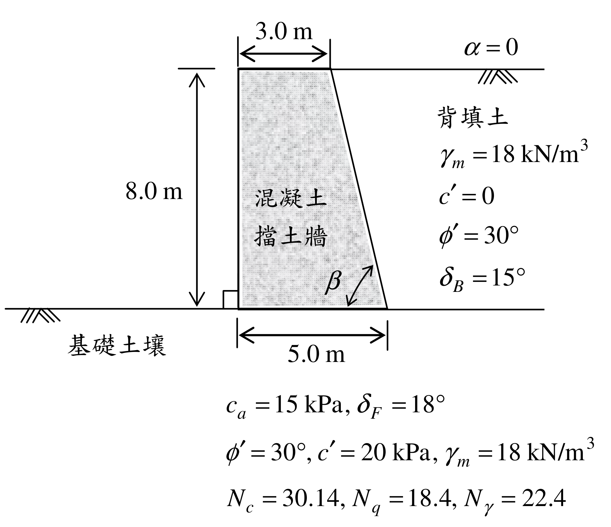
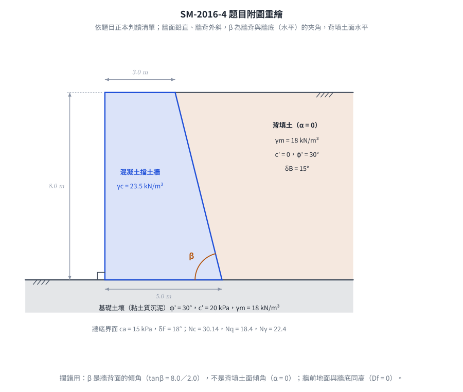
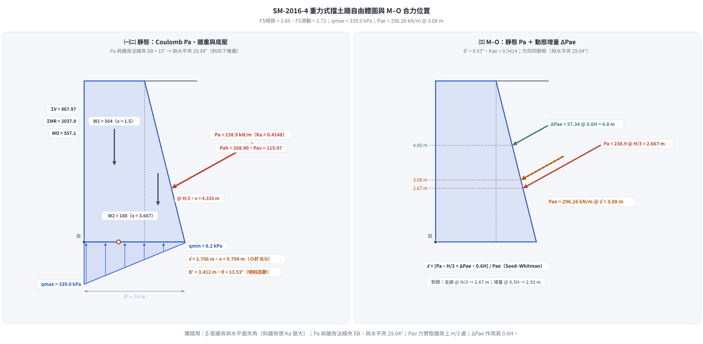

📄 題目正本：考卷原文・附圖・判讀清單（已確認）
SM-2016-4 題目正本
本檔只記錄考卷上寫了什麼、圖上畫了什麼，不含任何解法。解析見同資料夾
SM-2016-4.md。
判讀清單已確認（凍結）；本檔原則上不再修改（改動須回考卷原圖並記 log）。
| 項目 | 內容 |
|---|---|
| 考卷 | raw/exams/SM-2016_土壤力學與基礎設計.pdf 第 3 頁，第四題；第 4 頁「參考資料」與「註」 |
| 考年 | 民國 105 年（2016） |
| 配分 | 25 分（㈠10、㈡10、㈢5） |
| 附圖 | SM-2016-4-fig-2.png（重力式擋土牆剖面＋參數；2026-11-15 由考卷重新擷取 500 dpi）；既有 SM-2016-4-fig-1.png 為同一圖，右側空白處有滑鼠游標，保留不刪 |
| 判讀狀態 | 已確認（2026-11-15 關卡一：使用者授權依建議判讀確認；轉錄 2026-11-15；PyMuPDF 110 dpi 全頁目視，附圖 400–500 dpi 局部放大；盲讀後才比對既有解析） |
1. 考卷原文（逐字）
四、下圖所示為 8.0 m 垂直高混凝土重力式擋土牆，水平背填土壤（$\alpha = 0$）為砂質土壤，其單位重為 18 kN/m³，排水剪力強度參數 $\phi' = 30^\circ$、$c' = 0$，背填土與混凝土擋土牆界面摩擦角 $\delta_B = 15^\circ$，此擋土牆座落於某粘土質沉泥基礎土壤上，基礎土壤與混凝土擋土牆界面的剪力強度參數 $c_a = 15$ kPa、$\delta_F = 18^\circ$，基礎土壤之剪力強度參數 $\phi' = 30^\circ$、$c' = 20$ kPa，單位重 $\gamma_m = 18$ kN/m³，混凝土單位重 $\gamma_c = 23.5$ kN/m³：
㈠試以庫倫主動土壓力係數分析此重力擋土牆之抗傾倒、抗滑安全係數是否適宜？如不適宜，建議補救措施為何？（10 分）
㈡請分析此擋土牆基礎承載力的安全係數是否適宜？如不適宜，建議補救措施為何？（10 分）
㈢請以 Mononobe–Okabe 動態土壓力理論，分析此擋土牆承受水平及垂直方向的地震加速度分別為 0.15 g 及 0.05 g 的狀態下（$K_h = 0.15$ 及 $K_v = 0.05$），主動土壓力 $P_{ae}$ 的大小、方向與位置為何？（5 分）
（「粘土質沉泥」照考卷原文。）
2. 考卷給的公式、附表與參數
- 擋土牆：混凝土重力式，垂直高 8.0 m，牆頂寬 3.0 m、牆底寬 5.0 m（圖），$\gamma_c$ = 23.5 kN/m³。
- 背填土：砂質土壤，水平（$\alpha$ = 0），$\gamma_m$ = 18 kN/m³，$\phi'$ = 30°，$c'$ = 0，牆背界面摩擦角 $\delta_B$ = 15°。
- 牆底與基礎土壤界面：$c_a$ = 15 kPa，$\delta_F$ = 18°。
- 基礎土壤（粘土質沉泥）：$\phi'$ = 30°，$c'$ = 20 kPa，$\gamma_m$ = 18 kN/m³；圖下另給 $N_c$ = 30.14、$N_q$ = 18.4、$N_\gamma$ = 22.4。
- 地震係數：$K_h$ = 0.15、$K_v$ = 0.05。
第 4 頁「參考資料：形狀、深度與傾斜修正因數關係式」（考卷未標屬於哪一題；第三、四題都問基礎承載力）：
| 項目 | 凝聚力 ($c$) | 超載 ($q$) | 土重 ($\gamma$) |
|---|---|---|---|
| 形狀 ($s$) | $1+\left(\dfrac{B}{L}\right)\left(\dfrac{N_q}{N_c}\right)$ | $1+\left(\dfrac{B}{L}\right)\tan\phi'$ | $1-0.4\left(\dfrac{B}{L}\right)$ |
| 深度 ($d$) | $1+0.4\left(\dfrac{D_f}{B}\right)$ | $1+2\tan\phi'(1-\sin\phi')^2\dfrac{D_f}{B}$ | 1.0 |
| 傾斜 ($i$) | $\left(1-\dfrac{\theta}{90^\circ}\right)^2$ | $\left(1-\dfrac{\theta}{90^\circ}\right)^2$ | $\left(1-\dfrac{\theta}{\phi'}\right)^2$ |
備註：$\theta$ = 基礎荷載對垂直面之傾斜角。
第 4 頁「註」：
庫倫主動土壓力係數：
$$K_a=\frac{\sin^2(\beta+\phi')}{\sin^2\beta\cdot\sin(\beta-\delta_B)\left[1+\sqrt{\dfrac{\sin(\phi'+\delta_B)\cdot\sin(\phi'-\alpha)}{\sin(\beta-\delta_B)\cdot\sin(\alpha+\beta)}}\right]^2}$$
Mononobe–Okabe 主動土壓力係數：
$$K_{ae}=\frac{\sin^2(\phi'+\beta-\theta')}{\cos\theta'\cdot\sin^2\beta\cdot\sin(\beta-\delta_B-\theta')\left[1+\sqrt{\dfrac{\sin(\phi'+\delta_B)\cdot\sin(\phi'-\alpha-\theta')}{\sin(\beta-\delta_B-\theta')\cdot\sin(\alpha+\beta)}}\right]^2}$$
$$\theta'=\tan^{-1}\frac{K_h}{1-K_v}$$
- 沒有給：$\beta$ 的數值（圖上只標符號）、$P_{ae}$ 作用位置的公式或比例、$P_{ae}$ 的計算式（$K_{ae}$ 以外）、承載力公式本體、安全係數要求值、地下水位、牆前埋入深度。
- 卷首注意事項：㈠可以使用電子計算器。㈡不必抄題，作答時請將試題題號及答案依照順序寫在試卷上，於本試題上作答者，不予計分。（本年卷首只有這兩項。）
3. 附圖

圖面文字照錄：3.0 m、α = 0、背填土、γm = 18 kN/m³、c' = 0、φ' = 30°、δB = 15°、8.0 m、混凝土 擋土牆、β、基礎土壤、5.0 m、ca = 15 kPa, δF = 18°、φ' = 30°, c' = 20 kPa, γm = 18 kN/m³、Nc = 30.14, Nq = 18.4, Nγ = 22.4。
4. 判讀清單
| # | 項目 | 判讀 | 圖上／題文依據 | 把握 |
|---|---|---|---|---|
| 1 | $\beta$ 的定義 | 牆背面與水平面（牆底）的夾角，標在牆踵混凝土側；考卷未印數值，由幾何 $\tan\beta$ = 8.0／(5.0 − 3.0) 定出（$\beta$ < 90°，牆背向背填側外斜，背填土壓在斜牆背上方）。不是背填土面傾角（背填土面為 $\alpha$ = 0） | 附圖 400 dpi：β 與雙向箭頭位於牆背與牆底之間、混凝土內側；庫倫式中 $\beta$ = 90° 即鉛直牆背 | 確定（解讀） |
| 2 | 斷面形狀 | 梯形：牆面（左）鉛直，左下角有直角符號；牆背（右）傾斜 | 附圖 | 確定 |
| 3 | 牆高 8.0 m | 牆頂到牆底（尺寸線上端對齊牆頂延長線、下端對齊地面線） | 附圖左側尺寸線 | 確定 |
| 4 | 頂寬 3.0 m、底寬 5.0 m | 尺寸界線對齊牆面左緣與牆背頂角／牆踵；牆背水平投影 2.0 m | 附圖上、下尺寸線 | 確定 |
| 5 | 背填土 | 水平地表（$\alpha$ = 0）與牆頂同高；$\gamma_m$ = 18、$\phi'$ = 30°、$c'$ = 0、$\delta_B$ = 15° | 題文＋附圖 | 確定 |
| 6 | 牆前地面 | 與牆底同高，埋入深度 $D_f$ = 0、無被動土 | 附圖地面線與剖線 | 確定 |
| 7 | 牆底界面 | $c_a$ = 15 kPa、$\delta_F$ = 18° | 題文＋圖下參數 | 確定 |
| 8 | 基礎土壤 | $\phi'$ = 30°、$c'$ = 20 kPa、$\gamma_m$ = 18；$N_c$、$N_q$、$N_\gamma$ 已給 | 題文＋圖下參數 | 確定 |
| 9 | 指定理論 | ㈠用庫倫主動土壓力係數（第 4 頁註式）；㈢用 Mononobe–Okabe（第 4 頁註式＋$\theta'$ 式） | 題文＋第 4 頁 | 確定 |
| 10 | $K_v$ 方向 | 考卷給的 $\theta' = \tan^{-1}[K_h/(1-K_v)]$ 對應垂直地震力向上（$1-K_v$） | 第 4 頁 | 確定（解讀） |
| 11 | 參考資料表 | 形狀、深度、傾斜修正因數表未標題號，適用於本題㈡ | 第 4 頁 | 確定（解讀） |
| 12 | 基礎長度 | 沿牆長方向連續（條狀，按每延米分析） | 剖面圖 | 確定（解讀） |
| 13 | ㈢所求 | $P_{ae}$ 的大小、方向與位置；作用位置考卷未給公式 | 題文㈢ | 確定 |
| 14 | 考卷沒有給 | $\beta$ 數值、$P_{ae}$ 作用位置、安全係數要求值、地下水位（未提及，視為無水） | 全題 | 確定 |
轉錄：2026-11-15（SM-U3-2 題目正本推廣・批 1）
確認：2026-11-15 使用者授權依建議判讀確認（SM-U3-2 題目正本推廣・批 1，關卡一；使用者指示「要確認的依你建議」）
考題編號：SM-2016-4
主分類： SM-U3-2 擋土結構物穩定分析
副分類： SM-U2-1 淺基礎之支承力與沉陷量、SM-U3-1 側向土壓力理論
分析法： 有效應力法
標籤： Coulomb土壓力 抗滑動 抗傾覆 偏心距 Meyerhof承載力公式 Mononobe-Okabe動態土壓力 地震土壓力作用點
1. 題目（考卷原文見題目正本）
考卷原文、公式／附表、附圖與判讀清單（已確認）見
SM-2016-4-problem.md。本節只列解題時最容易讀錯的地方與本解使用的記號；題意以題目正本為準。

重繪自考卷附圖，依題目正本判讀清單 #1–#8；攔下的判讀錯誤：$\beta$ 是牆背面與水平面的夾角（$\tan\beta$ = 8.0／2.0），不是背填土面傾角（背填土面 $\alpha$ = 0）。
常見誤讀
| 項目 | 正確判讀 | 常見誤讀 |
|---|---|---|
| $\beta$ 的定義 | 牆背面與水平面（牆底）的夾角，標在牆踵混凝土側；考卷未印數值，$\tan\beta$ = 8.0／(5.0 − 3.0)（題目正本 #1） | 當成背填土面傾角，或取牆背與鉛直面的夾角 |
| 斷面方向 | 左側牆面鉛直（有直角符號）、右側牆背傾斜（#2） | 畫成牆背鉛直、牆面傾斜 |
| 埋入深度 | 牆前地面與牆底同高，$D_f$ = 0、無被動土（#6） | 計入被動土或深度修正 |
| 參考資料表 | 第 4 頁形狀、深度、傾斜修正因數表適用於㈡（#11） | 承載力不做傾斜修正 |
| ㈢作用位置 | 考卷只給 $K_{ae}$ 與 $\theta'$ 公式，沒給 $P_{ae}$ 作用位置（#13） | 以為考卷指定作用於 $H/3$ |
| ㈡安全係數的分母 | $q_u$ 用有效寬度 $B'$ 算，接觸壓力也要用同一個 $B'$：$q' = \Sigma V/B'$（Meyerhof 有效寬度法） | $q_u$ 用 $B'$、分母卻用梯形峰值 $q_{max}$（本解 2026-11-22 前即如此，得 1.89；兩種保守處理疊加） |
本解記號： $\beta$ 牆背傾角；$\delta_B$ 牆背摩擦角；$c_a$、$\delta_F$ 牆底界面參數；$K_a$、$K_{ae}$ 靜態、地震主動土壓力係數；$\theta'$ 地震合成角；$\Delta P_{ae}$ 動態增量；$B'$ 有效寬度。
2. 考題核心精神與出題者意圖 (Core Concepts & Examiner's Intent)
本題是擋土牆綜合設計分析的經典題型，考驗考生對以下四大核心概念的掌握：
- 庫倫主動土壓力 (Coulomb Active Earth Pressure)：理解傾斜牆背（非垂直）狀態下的 $\beta$ 角度定義，並能正確代入複雜的庫倫主動土壓力係數 $K_a$ 公式。
- 擋土牆外部穩定性分析 (External Stability)：正確計算土壓力的水平與垂直分量及其作用點，結合擋土牆自重計算抗傾倒與抗滑動安全係數。
- 偏心載重下的淺基礎承載力 (Bearing Capacity with Eccentricity)：將擋土牆底部視為承受偏心載重與傾斜載重的淺基礎，利用 Meyerhof 有效寬度法（含傾斜修正係數）計算極限承載力，並以同一有效寬度上的均布接觸壓力檢核安全係數。
- 地震動態土壓力 (Mononobe-Okabe Theory)：理解地震慣性力對主動土壓力的影響，正確計算擬靜態角 $\theta'$ 與動態土壓力係數 $K_{ae}$，並掌握動態增量作用點的經驗法則（高度 $0.6H$）。
3. 解題戰略地圖與陷阱分析 (Strategic Roadmap & Trap Analysis)
步驟化作戰計畫：
- 幾何與 $K_a$ 計算：由牆高與頂底寬計算牆背傾角 $\beta$，代入公式求 $K_a$ 及主動土壓力 $P_a$。
- 分力與力臂：計算 $P_a$ 之水平、垂直分量，以及牆體自重。求取各力對牆趾（Toe）的力臂。
- 穩定分析：計算抗傾倒安全係數 $FS_{OT}$ 與抗滑動安全係數 $FS_{sl}$，並與規範值（通常 $FS_{OT} \ge 2.0$, $FS_{sl} \ge 1.5$）比較。
- 承載力計算：計算合力偏心距 $e$、有效底寬 $B'$ 與其上的均布接觸壓力 $q' = \Sigma V/B'$（另列梯形 $q_{max}$ 確認無張力）。利用 Meyerhof 公式搭配傾斜修正係數計算極限承載力 $q_u$，求得 $FS_{bc} = q_u/q'$，若小於 3.0 則提出補救措施。
- M-O 動態土壓力：計算 $\theta'$ 及 $K_{ae}$，求得總動態土壓力 $P_{ae}$，並依據「靜態力在 $H/3$、動態增量在 $0.6H$」之原則推算合力作用點位置。
陷阱分析：
- 陷阱一：牆背傾角 $\beta$ 的定義。 庫倫公式中的 $\beta$ 是牆背與「水平面」的夾角。從幾何可得 $\tan\beta = 8/(5-3) = 4$，$\beta = 75.96^\circ$。不要誤用與垂直面的夾角。
- 陷阱二：土壓力作用方向。 $P_a$ 作用於傾斜牆背，與牆背法線夾角為 $\delta_B$。所以與水平面的夾角應為 $(90^\circ - \beta) + \delta_B = 14.04^\circ + 15^\circ = 29.04^\circ$。
- 陷阱三：承載力傾斜修正。 $q_u$ 的計算必須加入 Meyerhof 傾斜修正係數 $i_c, i_q, i_\gamma$，因為地基承受了來自土壓力的強大水平側力。
- 陷阱四：M-O 合力作用點。 $P_{ae}$ 不能單純設在 $H/3$。必須將其分為靜態 $P_a$ (作用於 $H/3$) 與動態增量 $\Delta P_{ae}$ (作用於 $0.6H$)，再利用力矩平衡求合力作用點 $\bar{z}$。
3.5 變數層次分析 (Variable Hierarchy Analysis)
最終目標
判定擋土牆抗滑、抗傾倒及承載力是否安全，並計算地震時之動態主動土壓力大小及位置。
本題關鍵公式（依計算順序）
- 牆背傾角：$\beta = \tan^{-1}(\frac{H}{B_{bottom} - B_{top}})$
- 庫倫主動土壓力：$P_a = \frac{1}{2}\gamma_m H^2 K_a$
- 抗傾倒與抗滑安全係數：$FS_{OT} = \frac{\Sigma M_R}{\Sigma M_O}$， $FS_{sl} = \frac{c_a B + \Sigma V \tan\delta_F}{\Sigma H}$
- 偏心距與有效寬度：$\bar{x} = \frac{\Sigma M_R - \Sigma M_O}{\Sigma V}$， $e = \frac{B}{2} - \bar{x}$， $B' = B - 2\boxed{e}$
- 有效寬度上的接觸壓力：$q' = \frac{\Sigma V}{\boxed{B'}}$（另列梯形 $q_{max} = \frac{\Sigma V}{B}(1 + \frac{6\boxed{e}}{B})$ 作底壓分布）
- 極限承載力 (Meyerhof)：$q_u = c' N_c F_{ci} + 0.5 \gamma_m B' N_\gamma F_{\gamma i}$
- 動態土壓力合力位置：$\bar{z} = \frac{P_a(H/3) + (\Delta P_{ae})(0.6H)}{P_{ae}}$
L1：題目直接給定
- 符號 ∣ 數值 ∣ 說明
- $H$ ∣ $8.0 \text{ m}$ ∣ 擋土牆高度
- $B$ ∣ $5.0 \text{ m}$ ∣ 擋土牆底寬
- $\phi'$ ∣ $30^\circ$ ∣ 背填土摩擦角
- $\delta_B$ ∣ $15^\circ$ ∣ 牆背摩擦角
- $\gamma_m$ ∣ $18 \text{ kN/m}^3$ ∣ 土壤單位重
- $\gamma_c$ ∣ $23.5 \text{ kN/m}^3$ ∣ 混凝土單位重
- $c_a$ ∣ $15 \text{ kPa}$ ∣ 底面附著力
- $\delta_F$ ∣ $18^\circ$ ∣ 底面摩擦角
- $c', \phi'_f$ ∣ $20 \text{ kPa}, 30^\circ$ ∣ 基礎土剪力強度參數
- $N_c, N_q, N_\gamma$ ∣ $30.14, 18.4, 22.4$ ∣ 承載力係數
L2：需知識點推導
幾何與土壓力
- 符號 ∣ 公式／來源 ∣ 卡關?
- $\beta$ ∣ $\tan^{-1}(8/2) = 75.964^\circ$ ∣
- $K_a$ ∣ 庫倫主動土壓力係數公式 ∣
-
$\theta_{Pa}$ ∣ $(90^\circ - \beta) + \delta_B$ ∣
穩定分析 -
$\Sigma V, \Sigma H$ ∣ 牆重與土壓力分力加總 ∣
- $FS_{OT}$ ∣ 抵抗力矩 / 傾覆力矩 ∣
-
$FS_{sl}$ ∣ 抵抗滑動力 / 驅動水平力 ∣
承載力計算 -
$e, B'$ ∣ 偏心距與有效寬度公式 ∣
- $F_{ci}, F_{\gamma i}$ ∣ Meyerhof 傾斜修正係數 ∣
-
$FS_{bc}$ ∣ $q_u / q'$（$q' = \Sigma V/B'$）∣
動態土壓力 -
$\theta'$ ∣ $\tan^{-1}(K_h / (1-K_v))$ ∣
- $K_{ae}$ ∣ Mononobe-Okabe 係數公式 ∣
- $\bar{z}$ ∣ 動靜態成分力矩平衡點 ∣
L3：深層知識（不懂就卡住）
- 知識點 ∣ 說明 ∣ 卡關?
- 傾斜角 $\beta$ 定義 ∣ 必須測量與水平面的夾角，不可誤用垂直夾角 ∣
- 承載力傾斜修正 ∣ 基礎承受水平力時，承載力會大幅折減，需代入傾斜因子 ∣
- 動態土壓力作用點 ∣ 總動態力需拆分為靜態 (作用於 $H/3$) 與動態增量 (作用於 $0.6H$) ∣
4. 步驟化詳細計算過程 (Step-by-Step Detailed Calculation)
(一) 抗傾倒與抗滑安全係數分析
Step 1：計算庫倫主動土壓力係數 $K_a$ 及土壓力 $P_a$
由幾何條件可知，牆背面的水平寬度為 $5.0 - 3.0 = 2.0 \text{ m}$，垂直高度 $H = 8.0 \text{ m}$。
牆背與水平面之夾角 $\beta$：
$$ \beta = \tan^{-1}\left(\frac{8.0}{2.0}\right) = 75.964^\circ $$
已知 $\phi'=30^\circ, \alpha=0^\circ, \delta_B=15^\circ$，代入題附庫倫主動土壓力係數公式：
$$ K_a = \frac{\sin^2(75.964^\circ+30^\circ)}{\sin^2(75.964^\circ)\sin(75.964^\circ-15^\circ)\left[1+\sqrt{\frac{\sin(30^\circ+15^\circ)\sin(30^\circ-0^\circ)}{\sin(75.964^\circ-15^\circ)\sin(0^\circ+75.964^\circ)}}\right]^2} $$
計算各項：
$\sin^2(105.964^\circ) = 0.9243$
$\sin^2(75.964^\circ) \cdot \sin(60.964^\circ) = 0.9412 \times 0.8743 = 0.8229$
根號內：$\frac{\sin(45^\circ)\sin(30^\circ)}{\sin(60.964^\circ)\sin(75.964^\circ)} = \frac{0.7071 \times 0.5}{0.8743 \times 0.9701} = 0.4169$
分母括號：$(1 + \sqrt{0.4169})^2 = (1 + 0.6457)^2 = 2.7083$
$$ K_a = \frac{0.9243}{0.8229 \times 2.7083} \approx 0.4148 $$
主動土壓力：
$$ P_a = \frac{1}{2} \gamma_m H^2 K_a = \frac{1}{2}(18)(8.0)^2(0.4148) = 238.92 \text{ kN/m} $$
Step 2：力與力臂計算
$P_a$ 作用於傾斜牆背，與牆背法線夾角為 $\delta_B=15^\circ$ (向下)。
牆背法線與水平面的夾角為 $90^\circ - 75.964^\circ = 14.036^\circ$。
故 $P_a$ 與水平面的總夾角 $\theta_{Pa} = 14.036^\circ + 15^\circ = 29.036^\circ$。
- 水平分力：$P_{ah} = 238.92 \cos(29.036^\circ) = 208.89 \text{ kN/m}$
- 垂直分力：$P_{av} = 238.92 \sin(29.036^\circ) = 115.97 \text{ kN/m}$
$P_a$ 作用於距底部 $H/3 = 2.667 \text{ m}$ 處。
其水平位置(距牆趾 Toe，即 $x=0$)：$x_{pa} = 5.0 - (2.667/8.0)\times 2.0 = 4.333 \text{ m}$。
牆體自重 (分為左側矩形 $W_1$ 與右側三角形 $W_2$)：
- $W_1 = 3.0 \times 8.0 \times 23.5 = 564.0 \text{ kN/m}$，力臂 $x_1 = 1.5 \text{ m}$
- $W_2 = \frac{1}{2} \times 2.0 \times 8.0 \times 23.5 = 188.0 \text{ kN/m}$，力臂 $x_2 = 3.0 + (2.0/3) = 3.667 \text{ m}$
總重直力：$\Sigma V = W_1 + W_2 + P_{av} = 564.0 + 188.0 + 115.97 = 867.97 \text{ kN/m}$
總水平力：$\Sigma H = P_{ah} = 208.89 \text{ kN/m}$
Step 3：穩定安全係數計算
抗傾倒力矩 (對牆趾)：
$$ \Sigma M_R = W_1 x_1 + W_2 x_2 + P_{av} x_{pa} = 564(1.5) + 188(3.667) + 115.97(4.333) = 846.0 + 689.4 + 502.5 = 2037.9 \text{ kN-m/m} $$
傾覆力矩：
$$ \Sigma M_O = P_{ah} \times (H/3) = 208.89 \times 2.667 = 557.1 \text{ kN-m/m} $$
抗傾倒安全係數：
$$ FS_{OT} = \frac{\Sigma M_R}{\Sigma M_O} = \frac{2037.9}{557.1} = \boxed{3.66} > 2.0 \quad (\text{適宜}) $$
底部抗滑力 ($c_a = 15 \text{ kPa}, \delta_F = 18^\circ$)：
$$ F_R = c_a B + \Sigma V \tan\delta_F = 15(5.0) + 867.97 \tan(18^\circ) = 75.0 + 282.0 = 357.0 \text{ kN/m} $$
抗滑動安全係數：
$$ FS_{sl} = \frac{F_R}{\Sigma H} = \frac{357.0}{208.89} = \boxed{1.71} > 1.5 \quad (\text{適宜}) $$
結論： 抗傾倒與抗滑安全係數皆適宜，不需補救措施。
(二) 基礎承載力安全係數分析
Step 1：偏心距、底壓分布與有效寬度
合力作用點距牆趾距離：
$$ \bar{x} = \frac{\Sigma M_R - \Sigma M_O}{\Sigma V} = \frac{2037.9 - 557.1}{867.97} = 1.706 \text{ m} $$
偏心距 (自底面中心)：
$$ e = \frac{B}{2} - \bar{x} = 2.5 - 1.706 = 0.794 \text{ m} < \frac{B}{6} = 0.833 \text{ m} \quad (\text{無張力}) $$
最大接地壓力：
$$ q_{max} = \frac{\Sigma V}{B}\left(1 + \frac{6e}{B}\right) = \frac{867.97}{5.0}\left(1 + \frac{6(0.794)}{5.0}\right) = 173.59 \times 1.9528 = \boxed{339.0 \text{ kPa}} $$
（$q_{min} = 8.2$ kPa > 0，底面全斷面受壓；梯形分布用於檢核無張力，承載力檢核改用下面的有效寬度。）
Meyerhof 有效寬度與其上的均布接觸壓力：
$$ B' = B - 2e = 5.0 - 2(0.794) = 3.412 \text{ m}, \qquad q' = \frac{\Sigma V}{B'} = \frac{867.97}{3.412} = \boxed{254.4 \text{ kPa}} $$
Step 2：極限承載力 $q_u$ (Meyerhof公式)
以有效寬度 $B' = 3.412 \text{ m}$ 計算。無埋置深度 ($D_f=0, q=0$)。
計算傾斜係數 (傾斜角 $\psi = \tan^{-1}(\Sigma H / \Sigma V) = \tan^{-1}(208.89 / 867.97) = 13.53^\circ$)：
$$ F_{ci} = \left(1 - \frac{\psi}{90^\circ}\right)^2 = \left(1 - \frac{13.53}{90}\right)^2 = 0.722 $$
$$ F_{\gamma i} = \left(1 - \frac{\psi}{\phi'}\right)^2 = \left(1 - \frac{13.53}{30}\right)^2 = 0.301 $$
極限承載力：
$$ q_u = c' N_c F_{ci} + 0.5 \gamma_m B' N_\gamma F_{\gamma i} = 20(30.14)(0.722) + 0.5(18)(3.412)(22.4)(0.301) $$
$$ q_u = 435.2 + 207.0 = 642.2 \text{ kPa} $$
Step 3：承載力安全係數與補救措施
$$ FS_{bc} = \frac{q_u}{q'} = \frac{642.2}{254.4} = \boxed{2.52} < 3.0 \quad (\text{不適宜}) $$
（等價寫法：極限承載力合力 $q_uB' = 642.2 \times 3.412 = 2191$ kN/m 與 $\Sigma V = 867.97$ kN/m 之比，同為 2.52。現行建築物基礎構造設計規範淺基礎長期載重支承力安全係數為 3.0。）
建議補救措施： 由於 $FS_{bc} = 2.52$ 不滿足 3.0，建議採取以下措施：
1. 加大基礎寬度 (增加 B)：向趾部延伸底版，降低最大接地壓力。
2. 增加基礎埋置深度 (增加 $D_f$)：將基礎深埋，利用土層覆土壓力 (提供 $q N_q$ 承載力)。
3. 地盤改良：對基礎土壤進行夯實或拌合改良，提升其 $c'$ 與 $\phi'$ 值。
4. 改採深基礎 (如基樁) 將荷重傳遞至深層堅硬地層。
(三) Mononobe–Okabe 動態土壓力分析
Step 1：計算動態土壓力係數 $K_{ae}$
已知 $K_h = 0.15, K_v = 0.05$。
擬靜態角 $\theta'$：
$$ \theta' = \tan^{-1}\left(\frac{K_h}{1-K_v}\right) = \tan^{-1}\left(\frac{0.15}{0.95}\right) = 8.973^\circ $$
代入題目給定的 M-O 公式，參數為：$\phi'=30^\circ, \beta=75.964^\circ, \delta_B=15^\circ, \alpha=0^\circ, \theta'=8.973^\circ$。
$$ K_{ae} = \frac{\sin^2(96.991^\circ)}{\cos(8.973^\circ)\sin^2(75.964^\circ)\sin(51.991^\circ)\left[1+\sqrt{\frac{\sin(45^\circ)\sin(21.027^\circ)}{\sin(51.991^\circ)\sin(75.964^\circ)}}\right]^2} $$
$$ K_{ae} = \frac{0.9852}{(0.9877)(0.9412)(0.7879)\left[1+\sqrt{\frac{(0.7071)(0.3588)}{(0.7879)(0.9701)}}\right]^2} $$
$$ K_{ae} = \frac{0.9852}{0.7323 \times (1 + \sqrt{0.3319})^2} = \frac{0.9852}{0.7323 \times 2.4842} \approx 0.5414 $$
Step 2：計算 $P_{ae}$ 大小、方向與位置
大小：
$$ P_{ae} = \frac{1}{2}\gamma_m H^2 (1-K_v) K_{ae} = 0.5(18)(8.0)^2(1-0.05)(0.5414) = \boxed{296.26 \text{ kN/m}} $$
方向：
與靜態相同，作用於擋土牆背面，且與牆背面法線夾角 $\delta_B = 15^\circ$ 朝下。（即與水平面夾角 $\theta_{P_{ae}} = 29.04^\circ$ 朝下）。
位置 (作用點高度)：
總動態土壓力 $P_{ae}$ = 靜態土壓力 $P_a$ + 動態增量 $\Delta P_{ae}$
$$ \Delta P_{ae} = P_{ae} - P_a = 296.26 - 238.92 = 57.34 \text{ kN/m} $$
靜態力 $P_a$ 作用於 $H/3$，動態增量 $\Delta P_{ae}$ 作用於 $0.6H$。對牆底取力矩平衡求總合力作用高度 $\bar{z}$：
$$ \bar{z} = \frac{P_a(H/3) + \Delta P_{ae}(0.6H)}{P_{ae}} = \frac{238.92(2.667) + 57.34(4.8)}{296.26} = \frac{637.2 + 275.2}{296.26} = \boxed{3.08 \text{ m}} $$
答：合力作用點位於距牆底 $3.08 \text{ m}$ 處（沿牆背高度）。

圖 2 靜態自由體圖與 M–O 合力作用點。攔下：把 β 當成背填土面傾角、Pa 方向畫成水平或只加 δB 不加牆背傾角、Pav 力臂取錯，以及把 Pae 全部放在 H/3（2.67 m）或 H/2。
5. 關鍵爭議點與進階探討 (Critical Issues & Advanced Discussion)
-
牆背傾角 $\beta$ 的判讀
許多教科書中，Rankine 理論推導是以垂直牆背為基礎，而 Coulomb 推導則允許傾斜牆背。圖中明確標示 $\beta$ 為牆背面與水平面的夾角。在考場上若將 $\beta$ 誤解為與垂直面的夾角，將導致 $K_a$ 數值嚴重偏差。幾何關係清晰指出 $\tan\beta=4$，為避免算錯，務必熟記公式符號的幾何意義。 -
承載力計算中的傾斜修正
部分考生在計算承載力時，會忘記擋土牆基礎承受巨大的水平力（土壓力水平分力），直接代入 $N_c, N_q, N_\gamma$。這會高估基礎承載力。本題特別給定 $N_c, N_q, N_\gamma$ 且提示可使用 Meyerhof 理論，強烈暗示需進行傾斜修正，否則將失去核心分數。 -
動態土壓力作用點位置 $\bar{z}$
傳統上有些工程師會將總動態力統一假設作用於 $H/2$ 處，但在國家考試標準解答中，依據 Seed & Whitman (1970) 的建議，將靜態與動態增量分開（$H/3$ 與 $0.6H$）加權計算合力位置，是更嚴謹且容易得分的做法。 -
承載力安全係數的分母（2026-11-22 勘誤）
本解 2026-11-22 前以 $FS_{bc} = q_u/q_{max} = 642.2/339.0 = 1.89$ 作答：$q_u$ 已依 Meyerhof 有效寬度 $B'$ 計算，分母卻用全寬梯形分布的峰值，等於把「縮小寬度」與「取峰值」兩種偏心處理疊在一起。有效寬度法的接觸壓力應取同一 $B'$ 上的均布 $q' = \Sigma V/B' = 254.4$ kPa，$FS_{bc} = 2.52$；與 SM-2016-3（同卷第三題）題解的做法一致。若改用傳統「全寬 $B$ 算 $q_u$、與 $q_{max}$ 比較」，$q_u$ 須以 $B = 5.0$ m 計算，不可與 $B'$ 混用。結論都是 < 3.0、不適宜；作答時寫明採用的定義即可。
修正日期：2026-11-15（§1 改為指向題目正本 SM-2016-4-problem.md，重繪附圖 figs/SM-2016-4-fig-1-problem.svg；§4、§5 指牆背的「背填土面」改為「牆背面」（用詞，β 數值未變）；§4 補解題圖解 figs/SM-2016-4-fig-2-fbd.svg；非勘誤）
修正日期：2026-11-22（FIX：㈡承載力安全係數改依有效寬度法——分母由梯形峰值 $q_{max}$ = 339.0 kPa 改為 $q' = \Sigma V/B'$ = 254.4 kPa，$FS_{bc}$ 1.89 → 2.52，結論「不適宜（< 3.0）」不變；原解 $q_u$ 用 $B'$、分母用 $q_{max}$，兩種偏心處理混用（觀念錯誤，與同卷 SM-2016-3 做法不一致）。§1 常見誤讀、§2、§3、§3.5、§4（二）、§5 同步。驗證：腳本重算 18 個數值 MISMATCHES: 0，$q_u/q'$ 與 $q_uB'/\Sigma V$ 雙路徑一致；題意無涉，題目正本已確認、未改）